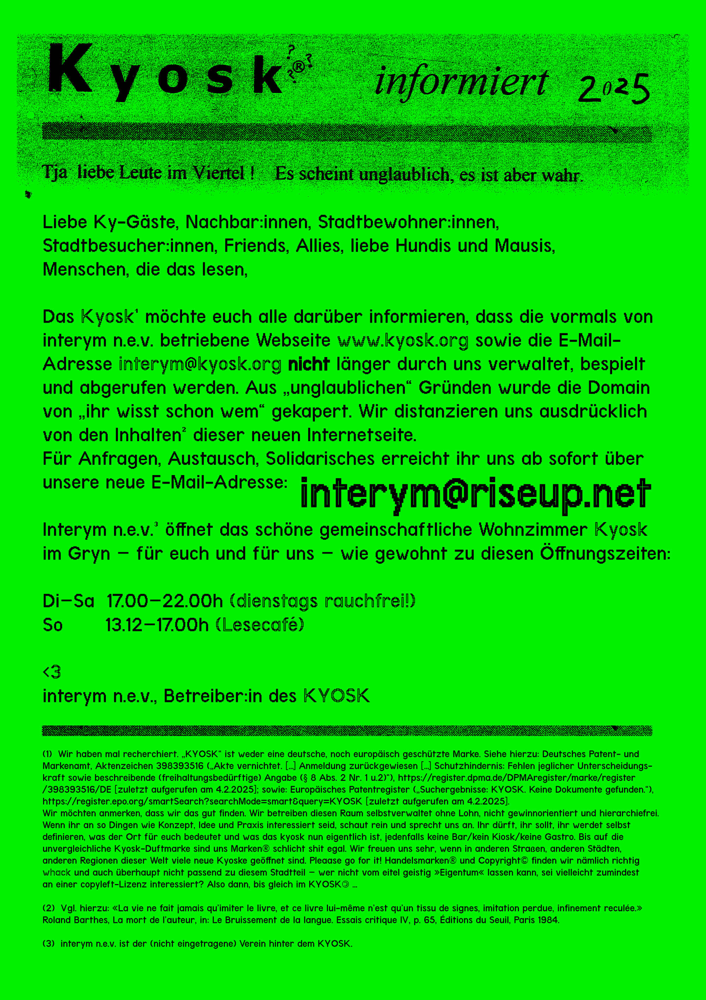

KYOSK
hi, it's kyo.sk
status: sorry, the room status is currently broken
open usually:
tuesday-thursday 17-22
friday-saturday 17-23
sunday 13:12-18
tuesday -> smokefree and küfa
Der Kleene Punker (1992) - §0
"det volk soll et dufte ham"


interym n.e.V.
adlerstr. 2a
79098 freiburg
email: interym at riseup dot net
